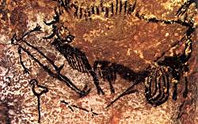

Grotte de Lascaux
The Cave of Lascaux - Lascaux II
Useful Information
| Location: | Dordogne, 2km south of Montignac on the D704. |
| Open: |
Original cave closed to the public Lascaux II: FEB to MAR Tues-Sun 10-12:30, 14-17:30. APR to JUN daily 9-18:30. JUL to AUG daily 9-20. SEP daily 9-18:30. OCT daily 10-12:30, 14-18. NOV to DEC Tues-Sun 10-12:30, 14-17:30. [2011] |
| Fee: |
Adults EUR 8.80, Children (6-12) EUR 6, Children (0-5) free. Groups (20+): Adults EUR 6.80, Secondary School Pupils EUR 5.50, Primary School Pupils EUR 4.20. Combi Ticket with Le Thot: Adults EUR 12.50, Children (6-12) EUR 8.50, Children (0-5) free. Groups (20+): Adults EUR 9, Secondary School Pupils EUR 7, Primary School Pupils EUR 6. 05-JUL to 22-AUG no group rates. Tickets sold only at the Mairie (town hall) at Montignac. [2011] |
| Classification: |
 Karst cave,
with prehistoric paintings. Karst cave,
with prehistoric paintings.
|
| Light: | electric. |
| Dimension: | 1,800 figures. |
| Guided tours: |
Lascaux: L=250m. Lascaux II: L=40m, D=50min. |
| Photography: | Photography and video strictly forbidden. No explanation given. |
| Accessibility: | 50m from parking to entrance. Entrance down a staircase with 30 steps. Floor paved, slope downwards. At the end return with some 50 steps. |
| Bibliography: |
Mario Ruspoli (1987):
Cave of Lascaux,
Hardcover: 206pp, Harry N. Abrams; Reissue edition (May 1987), ISBN: 0810912678 This is probably the most impressive book about the cave paintings of Lascaux. Published many times in many languages all around the world. If you want to buy a single book about cave paintings, you should take this one!  amazon.com amazon.com
Roberta Angeletti (1999): The Cave Painter of Lascaux, (A Journey Through Time) Hardcover: 32 pp, Oxford Univ Pr Childrens Books; (October 1999) A nice book for children, grade 1 to 3. Interesting story, which tells children a lot about cave paintings en passant. amazon.com
Brad Burnham (2003): Cave of Lascaux: The Cave of Prehistoric Wall Paintings, Library Binding: 24 pp, Powerkids Pr; (August 2003), ISBN: 0823962571 Again a childrens book, but still it is also very informative for adults. amazon.com
Jeanne K Hanson (2007): Caves, 142 pp, 16 colour and 30 B&W photos. Chelsea House, New York. pp 33-42 |
| Address: |
Lascaux II Information Tel: +33-553-519503 Semitour Périgord, 221 bis route d'Angouleme, BP 1024, 24001 Périgueux Cedex, Tel: +33-553-056565, Fax: +33-553-063094. E-mail: |
| As far as we know this information was accurate when it was published (see years in brackets), but may have changed since then. Please check rates and details directly with the companies in question if you need more recent info. |
|
History
| 08-SEP-1940 | the 17,000 years old paintings were discovered by boys. |
| 1940-1955 | research by Henry Breuil. |
| 1940s | research by Séverin Blanc. |
| 1947 | first photo documentation by Ralph Morse from Life magazine. |
| 1948 | opened to the public. |
| 1952-1963 | research by André Glory. |
| 1963 | closed to the public. |
| research by Anette Laming-Emperaire. | |
| 1976-1993 | research by Norbert Aujoulat. |
| 1978 | research by André Leroi-Gourhan. |
| 1979 | enrolled on the UNESCO World Heritage List. |
| 2000 | old and simple air conditioning replaced by new air conditioning system. |
| MAY-2001 | renovation completed, first white fungus on the walls. |
| SEP-2001 | the fungus now covers huge patches of the wall. |
| OCT-2001 | scientific identification of the kind of fungus and possible fungizids. |
| JAN-2002 | start of cave restoration by the use of fungicids and anti biotics. |
| SEP-2002 | new scientifc commitee introduced. |
| JAN-2004 | mechanical cleaning by injection and extraction, use of fungizids. |
| 2006 | new crisis, appearance of black fungus. |
| 2007 | UNESCO sends international scientists for help. |
| 2008 | UNESCO plans to put Lascaux on the red list of endangered World Heritage sites. |
Description
|  |
| Image: the so-called death scene in the Pit. |
{kind=link}
The Cave of Lascaux is famous for its prehistoric paintings showing various animals, hunts, and wars. They were discovered by four local boys on Thursday 12-SEP-1940. This is the official date of discovery and generally agreed on. But the story behind is told in many different versions. Here is one of them, which is told in a popular childrens book from the 1950s.
Marcel Ravidat was walking his dog Robot in the woods surrounding Montignac. The dog discovered a hole in the ground and crawled in, to search for its residents. The boy heard a whine and the dog was gone, when he crawled into the hole carefully, he discovered a drop, obviously the dog had fallen down into a bigger cave. He alarmed three friends, Jacques Marsal, Georges Agnel and Simon Coencas, and together they climbed down the drop and rescued the dog. When Ravidat explored another drop at the end of the cave, which turned out to be a dead end, he turned around and saw an extraordinary picture on the wall. It was a sketch of a man who was probably killed during a hunt. The picture was extrordinary, so they told their teacher, Leon Laval, about their discovery. He was so impressed that he wrote Abbe Henri Breuil, at that time the most famous French archaeologist. Breuil explored the cave for years and published his work internationally. Soon the cave became world renowned, was developed as a show cave and in 1948 opened to the public.
Other versions tell, that the boys were looking for a treasure in the area, which was told about in old legends. Some say the dog never fell in, but discovered the entrance four days before, on 08-SEP-1940, and the boys returned four days later to explore the cave. Others say the dog had nothing at all to do with the discovery.
Lascaux is often called the Sixtine Chapel of Prehistory, because of its wealth of pictures. 1,500 engravings and 600 drawings have been documented. They have been dated to be 17,000 years old, and are often dubbed the oldest artworks of mankind and the begin of art. This sounds good, but is obviously nonsense. Of course, Lascaux is one of the most outstanding painted caves, but since the 1940s numerous other caves have been discovered, both older and younger. Such an elaborated work of art does not come into existence from one day to the other. Probably there were thousands of similar paintings outside the cave, which are now destroyed by weathering, and only a small amount - which was protected by the cave - still exists. At least there must have been a culture which allowed the creation of the pictures, some kind of social system which allowed the painters to concentrate on painting while others were hunting. However, the oldest art known at the moment are human figures carved into ivory, which were found in southern Germany and were dated to be about twice as old.
There is a very interesting fact about the drawings: the hunts were drawn on the wall like a comic strip. The story of the hunt goes from the left to the right, until the prey is captured. These pictures were obviously used to tell stories. And they may be called the oldest known comic books!
The first chamber is called the Chamber of Bulls, and is probably the most impressive section with numerous animal paintings on the walls, most of them bulls. The artists were carefull not to cover older pictures with the new one, which otherwise was rather common. The oldest paintings here are 17,000 years old and painted in a single colour, either in red or in yellow. The Great Bull is the center of the chamber, a 5.50m long picture which is the largest painting in the chamber. The cave contains many pictures which simply depict animals, but a few are extraordinary, either with an extremely rare motive or so enigmatic that it is not clear what was depicted. On of this kind is the Unicorn, an animal with unusually large hindquarters, a pronounced abdomen, and two straight elongated horns protruding from the head. There is a sort of optical trick, when the head is viewed from a certain angle it resembles a human face.
The Chamber of Bulls is followed by a passage with a sequence of red cows, which show various aspects of perspectivity. This passage leads to Chamber 3, which once contained hundreds of paintings, but the walls above ground were destroyed over the millennia by erosion. Only the lower part of the wall, which was protected by the debris, is preserved. And it shows an impressive number of 209 figures, 122 horses, 25 wild oxen, two bison, four ibex and a large number of abstract shapes.
The Nave was named so because of its dome like shape, which resembles a cathedral. The rock is yellowisch and softer, thats why the passage widens and it also allowed the creation of engravings. At the left side of the entrace seven ibex look towards the chamber. Remains of colour make clear that they once were painted too, but the colour was destroyed and only faintly scratched outlines remain. A main artwork of this section are the Fighting Bison, two exaggerated bison which seem to be in conflict, and colored strokes are interpreted as detached rear legs, probably as a sign of death. Similar concepts were found in other caves.
This is the end of the former show cave, the following passage called Gallery of the Great Cats has never been open to the public. The narrow passageway is only a metre wide, it is the most secret part of the cave with pictures intended to be viewed by one person at a time. Beneath the engravings of caves it shows the portrait of a bison, a shape resembling the roman numeral XIII, and then a line of red dots.
The paintings are not really very fragile, but their long endurance was a result of the natural climate of the cave. Black colour is charcoal, red and brown colors are various clays. Paintings with such pigments may bleach slowly from ultraviolet light or be washed down from rain water, but both does not happen in caves. In caves the humidity and the low temperature keeps the paintings extremely stable and preserves them. And a cave is a very low energy environment, so there is very little food for any kind of life, which means that there are no biogene threads to the paintings. Nevertheless several paintings were destroyed by layers of rocks falling off the walls, taking the paintings on the surface with them.
But the high amount of visitors - up to 2,000 per day - raised the temperature, changed humidity, brought in dust and seeds of plants, and changed the chemistry of the air. One result was dramatically increased deposition of calcite on to of the paintings, called maladie blanche (white sickness) because of the white colour of fresh calcite. The thin calcite originally protected the paintings, but becoming too thick it went opaque. Another problem was the light, it bleached the paintings and caused the growth of plants, especially algae, an effect called lampenflora. This was called maladie verte (green sickness), because of the green colour of the plants. The negative effects of the visitors on the paintings was first discovered in 1955 and as a result the authorities closed the cave in 1963 to protect the paintings. Climate control equipment was installed inside the cave and in the mid 1970s the situation was under controll. Temperature and humidity were stable again and even a very limited amount of visits was possible, fiver persons per day for about 20 minutes each. The calcite was not removed, but did not grow further, the plants died after the light was off, and the green colour vanished by decomposition.
To allow the visitors to see the cave paintings anyway, an exact facsimile called Lascaux II (faux Lascaux or fake Lascaux), was built just 200m from the original cave. In Lascaux II two galleries have been reproduced: the Chamber of Bulls and the central corridor. This two parts of the Lascaux cave show the majority of the paintings, about 96%.
The construction of the replica was a chance for scientists, to prove their knowledge how the paintings were made. Inside a shell in reinforced concrete, with the contours of the cave inside, the paintings were executed in the same manner, using the same types of materials believed to have been used 19,000 years ago. This were natural pigments like ochre, charcoal, and iron oxides.
Unfortunately this is not the happy end of the story. After decades during which the situation had stabilized, things went bad very fast. In 2008 the United Nations made an urgent appeal to France to take action to preserve the paintings. The dramatic worsening of the situation started in 2000, when the management started to replace the climate control equipment inside the caves. It is unclear why this was necessary, but it is clear that all protocols were violated during the work and the installed machinery was not working as intended. Workers were entering and leaving all the time, the roof over the entrance was removed, and for the work a high energy light system was installed. The renovation was completed in MAY-2001, and at the same time the first patches of white fungus were discovered. The walls were soon covered in a layer of white mould, at the end of the summer white patches were covering huge areas of the wall.
The outbreak of the fungal infection of fusarium covered the walls and was fought by antibiotics, anti fungal substances and by manual removing. All those methods are problematic, as touching the paintings may destroy them as well as spraying chemicals on them. And it pollutes the environment. Additionally the fungus may become resistant. However the paintings were covered with cotton which was then sprayed with special fungicids, specifically designed to destroy this fungus. The results were promising, the fungus reduced, after two years the measures were reduced and the situation seemed stable.
However, the new air conditioning was not redesigned, and the materials introduced into the cave during the installation were not removed. The biogene material is the base of the fungus growth and its removing would stop the growth, unfortunately this is virtually impossible. The modern sensors of the air conditioning were not able to regulate the work of the air condition, because the humidity is always 100% underground. The old air conditioning removed an excess amount of water without regulation, but the humidity was still the natural 100%. In order to control the new air condition with electronic humidity sensors, the humidity was reduced to 95%. Several other changes were made, for example an internal door, the remains of an air lock of the 60s was removed. The resulting changes in the cave climate had very unfortunate effects. In 2006 black spots appeared on the wall, another sort of fungus, which does not grow at 100% humidity, but very well at 95%. It incorporates melanine, the pigment which is responsible for the suntan in human skin. Unfortunately this dark stain will stay, if the fungus is killed by fungizides. So the damage which already happened will be almost irreversible this time.
The end of this story is open, at the moment it seems to us that the paintings will be mostly destroyed in very few years. The UNESCO sees this similar, in 2008 it told the French government, which is responsible for the protection of this French World Heritage site, to ensure the protection of the painitngs. Otherwise the site will be listed on the red list of endangered WH sites.
In 2008 British scientists dated the paintings with the U/Th method for the first time. Before only the carbon of the charcoal in the paintings was used to determine the age of the paintings using the C14 method. Obviously this works only for the black parts of the paintings, which consist of charcoal. Uranium decays to thorium and this process happens in any kind of sinter deposit, if there is a trace of uranium. This method measures the uranium and thorium content in flowstone crusts which grew on top of the painting. As a matter of fact this method only gives a minimum age, but it is usable also for engravings and paintings without charcoal. The results are astonishing: parts of the artworks are between 25,000 and 35,000 years old.
- See also
- Subterranean World Heritage List
- Crater Names on Asteroid Ida
- The Oldest Archeologic Remains Found in Caves
 Search Google for "Grotte de Lascaux"
Search Google for "Grotte de Lascaux" Google Earth Placemark
Google Earth Placemark Lascaux - Wikipedia
(visited: 01-MAR-2011)
Lascaux - Wikipedia
(visited: 01-MAR-2011)- Lascaux
(visited: 01-MAR-2011),
official website.
(


 )
) - The Cave of Lascaux,
official site by the Ministry of Culture and Communication.
With a very nice virtual cave tour.
()
- Documents - Semitour - Semitour Périgord, official site of Lascaux 2,
official website.
(
)
- International Committee for the Preservation of Lascaux
- Lascaux Cave,
very detailed and informative page by Don Hitchcock.
- 30,000 B.C. The Birthplace of Animation: Lascaux, France
- The paleolithic painted cave of Lascaux
- The Hidden Treasure of Lascaux Cave
- Lascaux
(
 )
) - Archaeological Sites
 The Cave of Lascaux: The Final Photographs by Mario Ruspoli
The Cave of Lascaux: The Final Photographs by Mario Ruspoli- Mystery of the Lascaux Cave by Dorothy Hinshaw Patent
- Signs of Life by Jean Ferris
- Inside Lascaux: Rare, Unpublished - Photo Gallery - LIFE
This is a gallery of photographs by Ralph Morse.
In 1947 he went to Lascaux and became the first photographer to document the paintings on film.
Some of these photos have not been published before.
(visited: 17-SEP-2010)